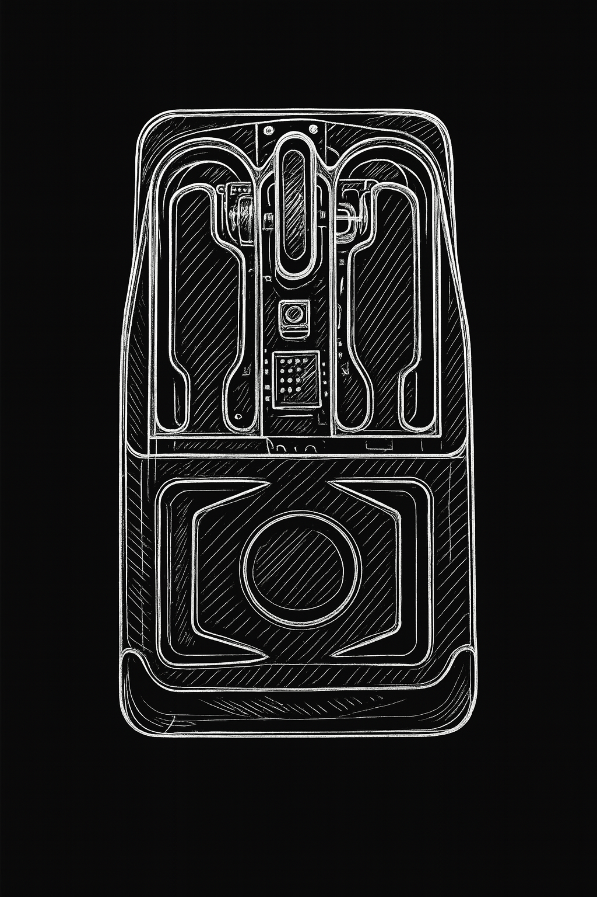

Project Overview
In this project I set out to re-imagine the form and interaction logic of the conventional computer mouse for people with hand impairments. Field research—interviews, observation, and video documentation—revealed three core pain points:
- Excessive travel distance: standard buttons sit beyond the users' comfortable reach.
- Dispersed force points: clicks require strength that impaired fingers cannot concentrate.
- One-size-fits-all geometry: commercial shells fail to conform to palms altered by injury or deformity.
Prototyping & Validation
- Rapid Iteration: Four functional prototypes were SLA-printed; each cycle folded in real-time user feedback and cut required actuation force by an average 12 %.
- User Testing: A/B sessions in the RISD studio raised single-click success from 57 % (standard mouse) to 92 %, while reported fatigue dropped sharply.
- Material Selection: H-temperature ABS-M30 for printing, with plans to shift to injection-molded PC-ABS for strength. Buttons are over-molded in 30 A TPE for a warm, cushioned touch.

Value & Next Steps
This design meets the fundamental need for seamless digital interaction among users with physical disabilities and offers a reusable parametric workflow for inclusive consumer electronics. Future work:
Through systematic research, validation, and iteration, the project embodies the principle that "design is care," turning empathy into tangible improvements in everyday life.